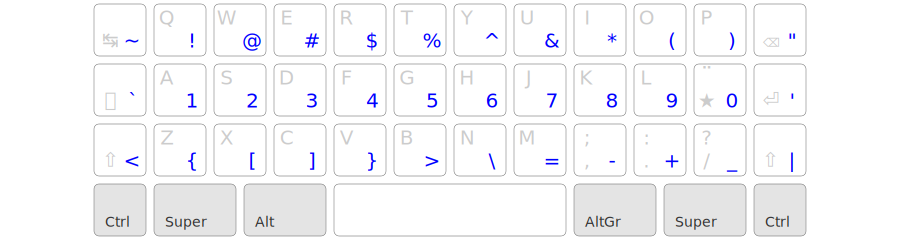

Une variante QWERTY-Lafayette pour les claviers compacts.
powered by x-keyboard géométrie :
Une adaptation du QWERTY-Lafayette pour les claviers compacts (50%, 40%, 42 touches, 34 touches…) :
Objectif : se passer totalement des touches excentrées. C’est un gain de confort immédiat sur un clavier standard et cela permet l’utilisation des claviers (très) compacts, pour rechercher la meilleure ergonomie possible.
Lafayette42 est une continuation de la démarche initiée avec QWERTY-Lafayette :
3×10 touches alpha + 10 chiffres + Espace + AltGr = 42, d’où « Lafayette42 ».
La touche morte ★ étend le principe du Lafayette classique :

Ainsi, toutes les lettres utilisées en français peuvent être saisies dans le pavé alpha de 3×10 touches — ce qu’aucune disposition standard ne permet (AZERTY, QWERTZ suisse, QWERTY québécois, Bépo…).
Sur un clavier compact cela permet de rapprocher les touches Enter et Backspace, soulageant très sensiblement l’auriculaire droit. Cela permet aussi d’utiliser des claviers 3×5, sans colonnes extérieures, pour soulager encore plus les auriculaires.
La couche AltGr est très différente de celle du Lafayette classique, toujours dans l’objectif de n’utiliser que les 3×10 touches principales. Elle contient tous les symboles utilisés en programmation :
… soit 28 symboles. On ajoute 0 et 1 dans les
deux places restantes, afin de faciliter les enchaînements du type
(0), [1] ou += 1 sans relâcher
AltGr.
Cette couche AltGr a été conçue sur les principes suivants :
[]{()} sont sur les touches les
plus confortables, i.e. WEASDF ; $%^&* sous 45678,
01 sous 01 ; La couche AltGr est encore en cours de développement, en collaboration avec le projet ErgoL. Elle est facilement personnalisable, et les utilisateurs sont invités à l’adapter à leurs besoins.
Sur un clavier compact il est recommandé de mapper toute la couche AltGr sur un layer dédié, de sorte à permettre les raccourcis comme Ctrl+ ou Cmd[.
La rangée des chiffres est identique à celle du QWERTY-US ; mais en Lafayette42 elle présente deux particularités :
!@#$%^&*() sont déjà présents (et plus accessibles) dans
la couche AltGr ; 
Sur un clavier 40%, dépourvu de rangée de chiffres, il faut mapper les chiffres sur un layer dédié. La plupart des utilisateurs se satisfont d’un mini-pavé numérique sur une moitié de clavier.
Toutefois, les utilisateurs qui soignent la typographie peuvent dédier un
layer numérique donnant un accès direct aux symboles typographiques
grâce à des macros ★,[chiffre] et facilitant l’enchaînement des
insécables avec les ponctuations ;:?!«» :
Inversement, les utilisateurs de claviers 3×6 qui utilisent peu les symboles peuvent se satisfaire d’un seul layer pour tous les chiffres et symboles ASCII — c’est moins efficace que la couche AltGr dédiée, mais toujours mieux que le QWERTY-US.
Exécuter l’installeur. La disposition de clavier apparaît dans la barre de langues (indicateur de la barre des tâches).
Dézipper et exécuter pkl.exe.
Un indicateur apparaît dans la barre des tâches. Ne nécessite pas de droits d’administration, peut fonctionner depuis une clé USB.
Enregistrer dans ~/Library/Keyboard Layouts (pour le seul
utilisateur courant) ou /Library/Keyboard Layouts (pour
tous les utilisateurs), et relancer la session.
La disposition de clavier sera disponible dans vos préférences « Langue et Texte », onglet « Méthodes de saisie ».
Script d’installation, nécessitant Python3 et lxml :
sudo apt install python3-lxml
curl -Ls https://qwerty-lafayette.org/releases/lafayette_linux_v0.8.1.py | sudo python3
L’installeur contient les deux variantes, Lafayette et Lafayette42. Ces dispositions sont activables par le gestionnaire de préférences de votre bureau ou directement en ligne de commande (sous Xorg) :
setxkbmap fr -variant lafayette
setxkbmap fr -variant lafayette42
WTFPL – Do What the Fuck You Want to Public License.
ErgoL42, une alternative ergonomique du Lafayette42.